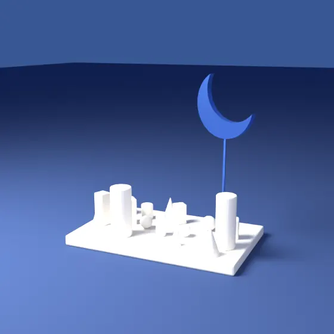
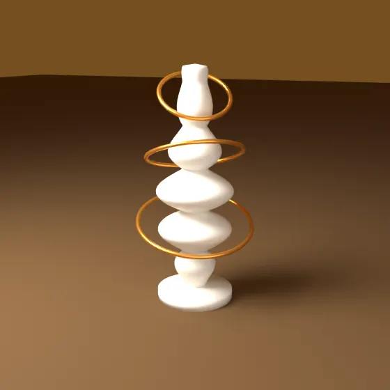
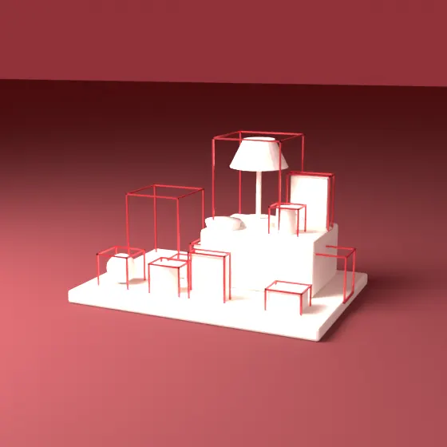
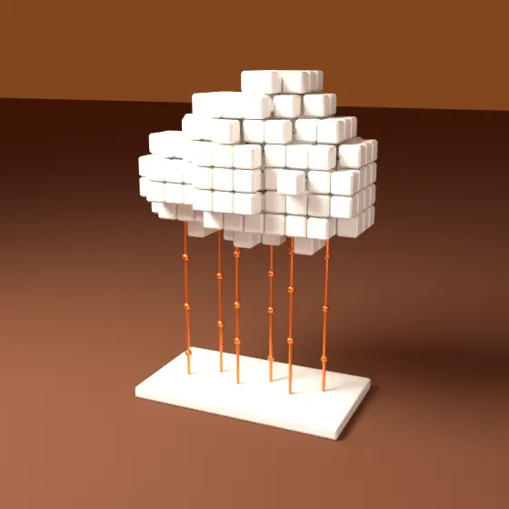
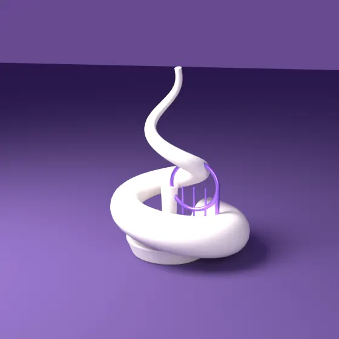
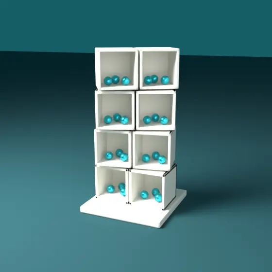

Istiqlal Aurangzeb
AI that sees, listens, and runs other AIs — 412 PRs merged in 9 months.
AI engineer at an AI venture studio who ships production AI end to end: a vision-powered home inventory for insurance claims, a voice assistant with long-term memory, and a multi-tenant platform for AI agents.
410K+ lines added. 3,415 commits.
or swipe leftor use the arrow keys
IPrologue: Carbon on the Chain
Mar–Dec 2025
Research roots: a building's carbon footprint, made tamper-proof.
- Medium
- Python, Revit, Solidity, Ethereum
- Dimensions
- 118 commits
Tamper-proof carbon records: embodied carbon computed from Revit BIM material data and written to an Ethereum ledger.
It started in construction research: carbon accounting for buildings, with material data pulled from Revit BIM models and the results written to Ethereum so no one could quietly edit them.
Look closer
- Procurement that survives real costs: a BIM-driven Solidity prototype re-based onto PostgreSQL.
9 repositories in this room, on public view: istiqlalbhat.

IINights, Notebooks, Prototypes
Oct 2025 – Feb 2026
After a silent summer, the commit graph lights up with self-directed AI builds.
- Medium
- Python, Jupyter, Graph RAG, Gemini, TypeScript, Next.js, C++
- Dimensions
- 477 commits, 17 repositories
Questions answered over a raw email archive: hybrid retrieval plus a GPU-accelerated Graph-RAG notebook.
Nobody assigned any of this: a Graph-RAG chatbot over a raw email archive, an LLM parser for purchase-order emails, an IoT rig with live anomaly detection. It was practice, and exactly the toolkit the next chapter needed.
Look closer
- Purchase-order emails turned into structured, de-duplicated records automatically, with Gemini doing the parsing.
- Sensor anomalies flagged live: an IoT rig with ML anomaly detection streaming to a dashboard.
17 repositories in this room, on public view: portfolio.

IIIA Voice That Remembers
Mar–May 2026
First production role: a voice-first AI assistant with long-term memory.
- Medium
- Flutter, Dart, Django, Gemini Live, pgvector, Swift, Firebase Auth
- Dimensions
- 65K+ lines added, 51 PRs merged, 689 commits
Snappier voice replies: audio flush threshold cut from ~1.5s to ~0.3s by moving real-time voice from GPT-4o Realtime to Gemini Live.
The first production product: a voice assistant that remembers, moved from GPT-4o Realtime to Gemini Live and given pgvector recall, multimodal memory and an LLM-maintained wiki. Then the unglamorous half that makes it real: on-device iOS speech, a cold-start microphone fix, production errors traced through server logs.
Look closer
- An assistant that remembers what it heard and saw: pgvector recall over past sessions plus joint image + text embeddings.
- Conversations become a living knowledge base: sessions compiled into interlinked wiki pages by an async two-model pipeline, searched with hybrid wiki + vector retrieval.
8 repositories in this room, all private and shown here anonymised.

IVEyes on Every Object
Apr–Oct 2026
The flagship: a computer-vision home-inventory product for insurance claims.
- Medium
- TypeScript, Next.js, React Native, Gemini, Supabase, PostgreSQL, Cloud Tasks
- Dimensions
- 147K+ lines added, 152 PRs merged, 1,301 commits
Full inventories from a single photo: on a real claims photo, items found went from 1 to 11 with a detect-then-identify vision pipeline that reads each object from a full-resolution crop.
Photograph a room; get back an itemised, priced inventory ready for an insurance claim. Built the two-pass vision pipeline at its core and judged every fix against human-labelled photos, not eyeballs.
Look closer
- Counts you can trust, proven on held-out data: exact-count rate 81% → 83% and over-counts per photo run down 0.53 → 0.43, under a pre-registered evaluation of 33 photos and 146 human-labelled counts.
- Prices in seconds, not a minute: projected in the PR at ~5s per item, down from ~60s, via a parallel retail-search fan-out with LLM ranking and a deterministic median.
3 repositories in this room, all private and shown here anonymised.

VRebuilt for the Cloud
May–Jun 2026
The same product, re-platformed AWS-native in a single sprint.
- Medium
- AWS, EKS, Terraform, SQS, Kubernetes, PostgreSQL, TypeScript
- Dimensions
- 49 PRs merged, 23K+ lines added, 342 commits
Correct under at-least-once delivery: idempotent worker callbacks and a closed worker-to-database back door, across ~25k lines of architecture fixes.
The same product, rebuilt AWS-native: LLM work on SQS workers streaming progress over SSE, Terraform on a shared EKS cluster, migrations as a Kubernetes Job before every rollout. An architecture review closed with workers that stay correct under at-least-once delivery.
Look closer
- Long LLM jobs no longer block requests: heavy work moved onto an async SQS worker pipeline that streams per-stage progress to clients over SSE.
- Repeatable infrastructure: web, API and workers deployed by Terraform onto a shared EKS platform with ingress routing and per-stage Postgres.
3 repositories in this room, all private and shown here anonymised.

VIAgents That Listen
Jun–Aug 2026
Turning meetings into agent memory — without leaking a word.
- Medium
- TypeScript, Next.js, Supabase, OAuth, LLM extraction, Webhooks
- Dimensions
- 44 PRs merged, 44K+ lines added, 360 commits
No meeting reaches an agent unless approved: a deny-by-default allowlist in front of transcript ingestion.
Feed an organisation's meetings to its AI agents without building a surveillance machine. Deny-by-default ingest, per-person OAuth with nothing stored, and a knowledge graph built from what was said.
Look closer
- Each person controls their own meeting data: per-user OAuth, nothing stored, tenants isolated by row-level security.
- Routing users can actually set up: a rules-first engine with signed webhooks and a durable outbox, backed by 176 tests against the real tenant boundary.
7 repositories in this room, all private and shown here anonymised.

VIIAn Operating System for Agents
Jun–Nov 2026
A multi-tenant platform where every workspace gets its own team of AI agents.
- Medium
- Kubernetes, Helm, TypeScript, Python, Terraform, MCP, Claude, Codex
- Dimensions
- 116 PRs merged, 129K+ lines added, 128 commits
Any company can sign up and get its own agent team: a registration control plane with OAuth, verified email, rate limits and onboarding (~27k lines, 104 files).
A multi-tenant platform that provisions a private team of AI agents for every workspace on Kubernetes: control plane, rosters, skill allowlists, owner-approved tasks. The hard parts were distributed-systems parts, from fencing stale queue messages to hot-adding agents without a gateway restart.
Look closer
- Stale queue messages can no longer touch a replacement workspace: provisioning fenced with instance and operation IDs, terminal failures no longer retried forever — backed by 394 tests, 110 of them lifecycle cases.
- A fix merged upstream into an open-source agent runtime: managed coding-CLI runtime bump and regenerated protocol schemas.
PRs here are squash-merged into one commit each, so the commit count understates the work.
9 repositories in this room, on public view: evil-llm, revit-agentic.
CodaWhat it adds up to
Mar 2025 – Nov 2026
Every commit in the exhibition: 3,415 commits on 224 active days across 56 repositories. Each rod is one day; its height is that day's commits, its colour the room it belongs to.
In 9 months of production work, 412 pull requests merged, adding 410K+ lines across three AI products and the infrastructure under them: a voice assistant with long-term memory, a computer-vision inventory product for insurance claims, and a multi-tenant platform that runs a private team of AI agents for every workspace. The pattern repeats across all of it — measure before claiming (held-out evals, concurrency benchmarks), migrate in stages instead of big-bang cutovers, and treat idempotency and concurrency as product features. 197 commits are co-authored with AI coding agents: AI, built with AI.
Look closer
- Re-architected per-item pricing as a parallel retail-search fan-out with LLM ranking, projected in the PR at ~5s versus ~60s before.
- Validated a vision fix on a held-out, human-labelled set: exact-count rate 81% → 83%, and over-counts per photo run fell 0.53 → 0.43.
- Auth moved in stages, never a big-bang cutover: SimpleJWT to Firebase on one product, a phased move to Better Auth that kept row-level security on another, and a new registration control plane for a third.
- Re-platformed a production AI product onto AWS EKS with Terraform, SQS workers and idempotent at-least-once processing.
- Got a fix merged upstream into an open-source agent runtime.
On public view
- istiqlalbhat Public GitHub profile README, rebuilt as a terminal session.
- portfolio Public personal portfolio site.
- evil-llm An open LLM steered by pushing two neurons, with a live 3D map of the effect.
- revit-agentic An AI agent for Autodesk Revit.
Shipping AI that has to work in production? Start with the code.